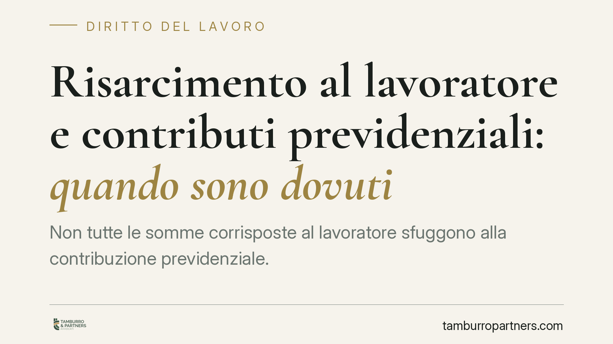

Risarcimento al lavoratore e contributi previdenziali: quando sono dovuti
Non tutte le somme corrisposte al lavoratore sfuggono alla contribuzione previdenziale. La giurisprudenza di legittimità ribadisce un criterio sostanzialistico: se l'importo ripara una perdita di reddito legata al rapporto di lavoro, i contributi INPS sono dovuti. Non rilevano né la denominazione scelta nella transazione né il trattamento fiscale applicato. Un passaggio che incide direttamente su conciliazioni e accordi novativi.

Il principio: conta la funzione, non l'etichetta
La questione ricorre spesso nelle transazioni che chiudono un contenzioso di lavoro. Le parti qualificano una somma come "risarcimento" e danno per scontato che resti fuori dal perimetro contributivo. La giurisprudenza di legittimità, in linea con un orientamento ormai consolidato, smonta questa automaticità.
Il criterio è sostanzialistico: ai fini previdenziali non rileva il nome attribuito all'importo nell'accordo, ma la sua funzione economica concreta. Occorre domandarsi quale pregiudizio quella somma vada effettivamente a ristorare. È la causa reale dell'attribuzione patrimoniale a determinarne il regime, non la formula redazionale concordata tra datore e lavoratore.
Danno emergente e lucro cessante: il vero discrimine
La distinzione decisiva è quella tracciata dall'art. 1223 del codice civile, che scompone il danno in due componenti. Il danno emergente è la perdita subita in senso stretto: un esborso, un costo, la diminuzione di un bene già nel patrimonio del danneggiato. Il lucro cessante è invece il mancato guadagno, il reddito che sarebbe maturato e non è stato percepito.
Qui si colloca lo spartiacque. Quando la somma ripara un lucro cessante collegato al rapporto di lavoro - tipicamente retribuzioni non percepite per un licenziamento poi dichiarato illegittimo, o per un demansionamento - essa sostituisce un reddito da lavoro. In quanto tale, rientra nella base imponibile contributiva.
Il riferimento normativo è l'art. 12 della legge n. 153/1969, che individua in modo ampio ciò che costituisce retribuzione imponibile ai fini previdenziali: tutto quanto il lavoratore riceve in dipendenza del rapporto di lavoro. Se l'importo ha natura sostitutiva della retribuzione, la contribuzione è dovuta a prescindere dalla veste risarcitoria.
Diversa è la posizione delle somme che ristorano un danno emergente estraneo alla logica retributiva - ad esempio il danno alla salute o alla professionalità in senso proprio - che non concorrono alla base imponibile contributiva.
Fisco e previdenza: due piani distinti
Un chiarimento prezioso riguarda la separazione tra piano fiscale e piano contributivo. Che una somma sia esente da imposizione IRPEF, o soggetta a tassazione separata, non dice nulla sul suo trattamento previdenziale. Sono logiche normative autonome, con presupposti e finalità diversi.
È un errore frequente ragionare per analogia: "se non paga tasse, non paga nemmeno contributi". L'analisi va condotta separatamente. Una somma può essere fiscalmente agevolata e al tempo stesso pienamente soggetta a contribuzione, se la sua funzione è sostituire reddito da lavoro.
Un caso particolare: il pubblico impiego contrattualizzato
La stessa logica funzionale si applica ai rapporti di lavoro alle dipendenze delle pubbliche amministrazioni (c.d. pubblico impiego contrattualizzato). Anche qui le somme transattive che ristorano retribuzioni non percepite seguono il criterio sostanzialistico, pur con le specificità di gestione previdenziale proprie di alcune categorie, inclusi i dirigenti. L'etichetta dell'accordo non è dirimente nemmeno in questo ambito.
Implicazioni pratiche
Per il datore di lavoro la conseguenza è concreta: una transazione formulata in modo generico, che somma in un unico importo poste eterogenee, espone al rischio di una pretesa contributiva successiva da parte dell'INPS, con sanzioni e interessi. Qualificare l'intera somma come "risarcimento" non la sottrae alla contribuzione previdenziale dovuta se la funzione è sostitutiva della retribuzione.
Per il lavoratore il tema incide sul netto effettivamente percepito e sulla propria posizione assicurativa: le somme assoggettate a contribuzione alimentano, in linea di principio, la posizione previdenziale.
Cosa fare in concreto
- Scomporre l'accordo: indicare analiticamente a quale specifico pregiudizio si riferisce ciascuna quota dell'importo complessivo, distinguendo danno emergente e lucro cessante.
- Stimare preventivamente l'onere INPS sulle componenti sostitutive della retribuzione, prima di sottoscrivere la transazione.
- Non affidarsi all'etichetta: il termine "risarcimento" nel testo non neutralizza l'obbligo contributivo se la funzione è retributiva.
- Tenere distinti fisco e previdenza nella valutazione: l'eventuale agevolazione fiscale non si estende automaticamente al profilo contributivo.
- Conservare la documentazione che giustifica la qualificazione attribuita a ciascuna voce, utile in caso di verifica.
---
*Contributo informativo a cura di Tamburro & Partners Avvocati - Avv. Giuseppe Tamburro. Non costituisce parere legale.*
Ogni storia di lavoro ha i suoi tempi.
Se gestisci HR e vuoi un confronto su contenzioso, ispezioni o licenziamenti, scrivi allo studio. Ti rispondiamo entro un giorno lavorativo.